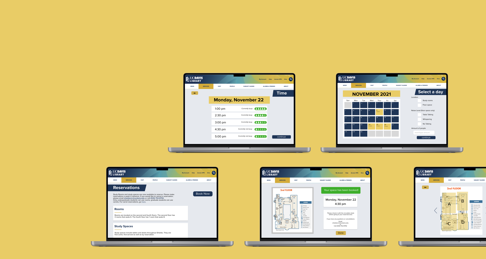
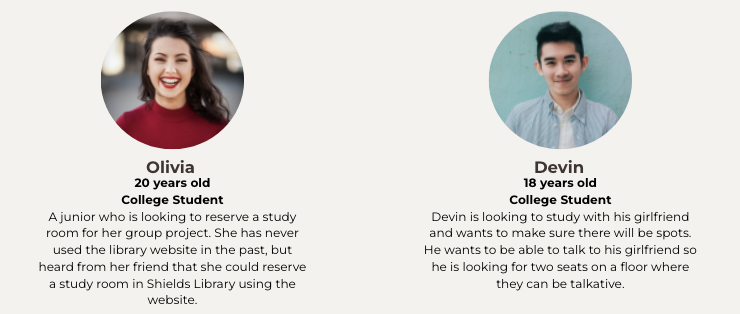
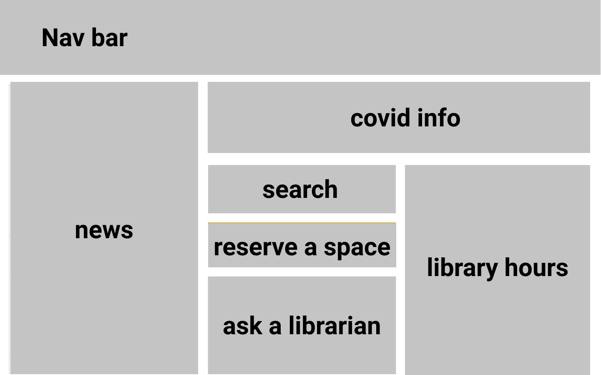
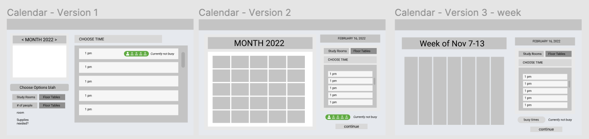

UC Davis Library Space Reservation
Overview
UC Davis Library Space Reservation is a redesigned of a space reservation system for the UC Davis library to help students efficiently book study rooms and seats. Our goal was to increase awareness of the system and make it more efficient.
Collaborators
Camille Nikaido, Meleah Phillips, and Jasmine Romero
Timeframe
November 1, 2021 - November 22, 2021
Problem
The University of California Davis Shields Library operates under a first-come, first-serve basis for its open seating areas and study rooms. This could result in an often overpacked library and students might need to spend a long time looking for an open seat during peak hours. This becomes especially difficult when students need to find a study space for group work or need additional accommodations. Students also need to physically go to the library to check if the study rooms are available or not. Thus, the UC Davis Library wants to give students the option to book study rooms and studying spaces in the Shields Library.
Solution
A redesigned site integrated into the UC Davis website that allows students to schedule their study space and is easy to navigate.
Research
To begin our research, we wondered how we could reach as many UC Davis students and faculty members as possible given our time constraints in order to get a comprehensive understanding of the library experience. We concluded that surveying via Google Form would yield the highest participants and the most diversity.
The main goal was to see if students reserved rooms at the library and how might we make the process easier and more clear. Our other goals were to understand how students liked to study and if they had a hard time finding seats at the library.
Survey Structure
For our survey, we used a mix of multiple-choice, checkbox, and free-response questions. We made sure to word our questions very objectively and to leave the responses open-ended. First, we gathered basic information to understand the demographic of our survey respondents. We asked about their role in the UC Davis community (i.e. student, faculty, or community member). Second, we wanted to learn their preferences for study spaces. We asked how they engage with the library (what services they use), how often they frequent the library, their study habits (going alone or going in groups), and necessary accommodations. Finally, we asked questions specific to open seats and study rooms. For open seats, we asked for their preferred noise level (the current library is divided by floors by noise level). For study rooms, we asked how long they usually reserve the room for and the supplies they would like to see provided in the room.
Survey Results
- We ultimately received 31 responses and we easily saw common trends and pain points amongst the survey participants.
- First, we learned that 80.6% of respondents go to the library and of that demographic 45.2% go at least once a week meaning there is a great need for an efficient system to find seats and reserve study rooms.
- Next, we learned that 77.4% often study alone and 45.2% like to study with one other person; while, only 6.5% studied in groups of three or more people. This data reveals that most people would utilize the open space areas rather than the study rooms.
- We learned that 64.5% of respondents would like to reserve study rooms for 1-2 hours. This is helpful in deciding the intervals we would offer study room reservations.
- 58.1% of respondents and 48.4% of respondents would want access to a whiteboard and markers in the study room. This data helps us learn the most popular supplies so we know which options to include on the website.
- For the free-response section, an overwhelming majority of respondents responded that they never had a need for study rooms and many didn’t even know libraries had study rooms. s
Conclusions Drawn From Survey Results
- Many members of UC Davis utilize the library so many users could benefit from an efficient library space reservation service.
- Most respondents didn’t even know our libraries offer study rooms so we need to publicize this information more so more students can benefit from this service.
- An overwhelming majority of respondents only study individually or in pairs and rarely require study group spaces or study rooms.
- All respondents like to study in a silent or fairly quiet environment, thus helping us understand which floors would be the busiest at the library.
User Personas
From our survey results, we created two user personas to represent two common types of users of the library reservation site. During the ideation phase, we began to brainstorm ideas to help solve the pain points of these two users.
Ideation
From our research, we decided to focus on:
- Creating a process for users to reserve a study space.
- Making this reservation system easy to find.
- Give students options to customize this experience.
Low-fidelity Prototype
We first started our ideation phase on pen and paper by sketching out ideas for necessary pages such as personal information, calendar, contact, and confirmation pages. We decided on having multiple pages to reduce the cognitive load.
Mid-fidelity Prototype
Next, we began to produce mid-fidelity frames for each page using Figma.
First, we had to figure out where we wanted to include this resource. To do this, we first tried to understand how our users might think. We figured that students would most likely try to find the reservation system on the UC Davis website. We also considered that students might be less inclined to use the service if they had to download a new app for one function. Thus, instead of creating a brand new app or site, we decided to incorporate the system into the current UC Davis Library website to make it easier to find and reduce the amount of steps students have to take to access this resource.
When doing research on the UC Davis website, we noticed the site had too much information which made resources difficult to find through the sea of information. As a result, we first redesigned the main page of the library website to make it less cluttered and put the reservation system in an easy-to-spot place.
Next, we decided to create a calendar screen so users could see which days they could reserve, as well as, which times were busiest so they could plan around that. This screen would include information such as date, location (either study room or floor space), noise level, and amount of people. Since the calendar page contained a lot of information we decided to create a separate screen for the time. This screen would provide the available times as well as how busy the library usually is at that time.
For the calendar page, we created three iterations: a daily view, a weekly view, and a monthly view. We decided on the monthly view so our users needed to navigate through fewer pages and could have a more birdseye view. Also, since the times were on another page, we only needed the dates so a calendar view would be the best fit. Ideally, we would have based this decision on user feedback through usability tests; however, due to our time constraints, we did not have time to conduct usability tests so we made the decision through internal discussion.
Based on whether they picked study rooms or floor space, we created different user flows for each option. The different flows allow students to further customize their experience, as well as, better understand what the library can offer them.

Finally, we also included contact info and confirmation screens to finalize their reservation and to confirm with the users that their action has been completed.
High-fidelity Prototype
As stated earlier, we decided to incorporate the system into the existing UC Davis Library website so we designed the pages with UC Davis branding to keep a consistent look. The font used is Proxima Nova, while the main colors used are gold (#D5AD3D) and blue (#1F3556).
Final Solution
Challenges
Time Constraint was our main challenge. We only had two weeks to complete the entire redesign so we had limited time to conduct research, as well as, ideate and prototype. Since all designers are full-time college students with conflicting schedules, meeting up was difficult. In addition to our time constraints, for most of the designers involved in the project, including myself, this was our first UI/UX design sprint. Thus, we were quite new to the whole process and also had to teach ourselves Figma within the span of two weeks. One main takeaway I had from this experience is the importance of effective communication and having a plan. Since the time we could meet up was limited, we had to do a lot by ourselves remotely. Thus, having clear deadlines and responsibilities for each person was crucial.
The time constraint was a major challenge during the research and prototyping phase. If we had more time, we would have done some in-depth interviews to better understand students’ needs and concerns. We would have also loved to conduct usability tests to further perfect our prototype and make sure our designs correlate with what is most intuitive for them.
Reflection
I am writing this case study half a year later. During this time, I have been constantly working on different personal projects and taking UX-related classes to further develop my skills as a designer. Looking at the design now with my current knowledge, I see many areas for improvement.
First, instead of a monthly view with the times on a different page, a weekly view with the times also listed would be a better user experience. To back up my hypothesis, I would also conduct AB testing. Next, for the different noise levels, I would also include the floor that correlates with each noise level to let users know which floor they have chosen. For study rooms, I would also include the max capacity for each room next to each option because right now the distinction between the two options “second floor” and “fourth floor” is not clear for users. Next, I would delete the information on when the library is busy since that is not essential information. It is also confusing and might mislead students into thinking no seats are available when it says the library is busy. Having the time be a different color when all seats are filled would be easier for users to understand. Finally, I would also fix some of the padding and alignment to make sure everything is consistent and there is sufficient white space for all the screens.
Next Steps
The next step would be to expand this service to not just the Shields Library but all libraries on campus.
Final Thoughts
Overall, this experience was fun and was a great first UX design sprint experience. I was able to experience the whole design timeline, learned to prototype with Figma, and gained experience working with a team of designers.